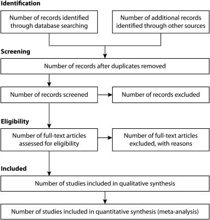
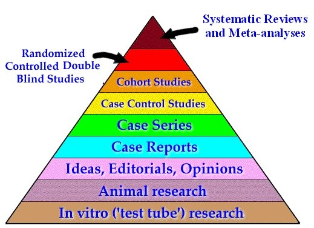
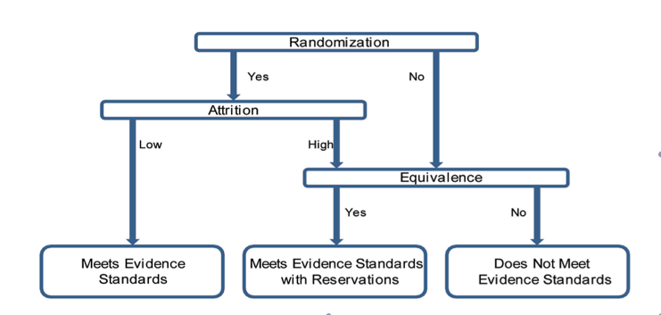

4 Identifying research questions and data sources
4.1 Formulating research questions
Research questions have the following elements, which can be remembered by the acronym PICO.
| Letter | Meaning | Example |
|---|---|---|
| P | Patient or population | Adolescents |
| I | Intervention or exposure | smoke cigarettes daily |
| C | Comparison group | do not smoke cigarettes daily |
| O | Outcome | wear a seat belt in a car consistently |
Example question: Are adolescents who smoke cigarettes daily less likely to wear a seat belt in a car consistently than adolescents who do not smoke cigarettes daily?
Comparison groups are sometimes left unstated, but that leads to ambiguities because often more than one comparison group is possible.
E.g., Are adolescents who smoke cigarettes daily less likely to wear a seat belt in a car than adults who smoke cigarettes daily?
4.2 Summarizing research and evaluating research quality
Literature review versus systematic review versus meta-analysis: in all cases, the papers are all about the exact research question.
A paper may include additional background information. In the case of our example: the number of adolescents who are injured or killed by inconsistent seatbelt use, and a theory linking various risk-seeking behavior such as cigarette smoking and inconsistent seatbelt use. This background information is useful, but it isn’t considered part of the literature review.
4.2.1 Systematic reviews in public health
In systematic reviews, researchers say how they found the papers that they are using. This flow diagram uses the PRISMA style source: Reporting Guidelines and the American Journal of Public Health’s Adoption of Preferred Reporting Items for Systematic Reviews and Meta-Analyses, Am J Public Health. 2012 May; 102(5): 780–784. https://www.ncbi.nlm.nih.gov/pmc/articles/PMC3483925/

4.2.2 Systematic reviews in epidemiology
CDC’s Human Genome Epidemiologic Network has guidelines for how to conduct reviews. http://www.cdc.gov/genomics/hugenet/publications/index.htm#Guidelines
Epidemiology has not established formal procedures for systematic reviews beyond those published in isolated peer-reviewed journal articles. Denison HJ, Dodds RM, Ntani G, et al. How to get started with a systematic review in epidemiology: an introductory guide for early career researchers. Archives of Public Health 2013, 71:21 http://www.archpublichealth.com/content/71/1/21 Systematic reviews in epidemiology: why are we so far behind? Int. J. Epidemiol. 2002; 31 (1): 6–12. http://ije.oxfordjournals.org/content/31/1/6.full
4.2.3 Systematic reviews in health services research
4.3 Identifying sources
4.3.1 Peer-reviewed sources
Search database with free text or medical subject heading terms. Pubmed http://pubmed.gov
The library system is new, and the library is still working out problems. Contact the library right away if you have problems so they can help you before the assignment is due.
If your university does not give you free access to a paper and if the paper is not available for free via Pubmed, please write to the paper’s author to request it. An example email:
Dear Dr. Jones, I’m interested in citing your paper titled, XXX but unfortunately my university library does not subscribe. Could you please send me a copy? Thank you,
Your name, MPH candidate
4.3.2 Grey literature
Non-peer-reviewed papers from government agencies and reputable think tanks.
4.3.3 Hierarchy of evidence
Evidence can be evaluated both by the study type and the quality of the study.
Literature reviews must attempt to resolve conflicts between studies, and also show flaws and openings in existing studies. Many people have tried to create a hierarchy of evidence.

We’re most concerned with the analytic studies, the top 4 levels of this diagram. The diagram is a good start, but it leaves out several study types (e.g., cross-sectional data, non-blinded RCTs, natural experiments), doesn’t deal with study quality (e.g., how much weight to give a RCT with high drop-out?), and it gives more space to the types of data that it deems less rigorous.
There are also rubrics for evaluating studies using prompts. Rubrics prompt reviewers to identify all important issues in the study, as well as to think about factors that were omitted from consideration, such as potential confounders. These rubrics are similar to the guide questions that students use in study evaluations.
Study quality is difficult to define comprehensively. To aid reviewers in assessing the quality of research, research organizations have established rubrics for evaluating studies. These rubrics are similar to the guide questions that you have used in your study evaluations in for the past 2 assignments. Ideally, rubrics prompt reviewers to identify all important issues in the study, as well as to think about factors that were omitted from consideration, such as potential confounders.
Epidemiology has few bodies defining research quality.
In the field of health services research, at least 5 prominent bodies have established criteria for producing systematic reviews, including evaluating research quality.
Institute for Medicine (IOM), Finding What Works in Health Care: Standards for Systematic Reviews http://iom.nationalacademies.org/Reports/2011/Finding-What-Works-in-Health-Care-Standards-for-Systematic-Reviews.aspx
Patient Centered Outcomes Research Institute (PCORI) methodology report Standards for Causal Inference Methods in Analyses of Data from Observational and Experimental Studies in Patient-Centered Outcomes Research, Final Technical Report, March 15, 2012, available from: http://www.pcori.org/research-results/research-methodology/pcori-methodology-report
Agency for Healthcare Research and Quality (AHRQ)
Cochrane Collaboration: http://handbook.cochrane.org/
U.S. Preventive Services Task Force (USPSTF): http://www.uspreventiveservicestaskforce.org/Page/Name/methods-and-processes
Other fields have their own standards, such as education: Institute of Education Sciences (IES, in the federal Department of Education) WWC Procedures and Standards Handbook, http://ies.ed.gov/ncee/wwc/documentsum.aspx?sid=19, American Educational Research Association (AERA, a national research organization) (Schneider et al, Estimating Causal Effects: Using Experimental and Observational Methods, http://www.aera.net/Portals/38/docs/Causal%20Effects.pdf IES produced this diagram for evaluating RCTs:

All of these rubrics — including the rubric for evaluating studies that you will use in class — are just tools for evaluating research. Ultimately, reviewers must use their own judgement in evaluating studies and find balance between the ideal and the feasible.
4.3.4 US Preventive Services Task Force guidelines
US Preventive Services Task Force defines studies as good, fair, or poor: “In general, a good'' study is one that meets all criteria well. Afair’’ study is one that does not meet (or it is not clear that it meets) at least one criterion but has no known fatal flaw.''Poor’’ studies have at least one fatal flaw.” http://www.uspreventiveservicestaskforce.org/uspstf08/methods/procmanualap7.htm
They give criteria that characterize a good study, e.g., for RCTs and cohort studies, the USPSTF says (continued quote from above webpage): ” Initial assembly of comparable groups: - For RCTs: adequate randomization, including first concealment and whether potential confounders were distributed equally among groups. - For cohort studies: consideration of potential confounders with either restriction or measurement for adjustment in the analysis; consideration of inception cohorts.
Maintenance of comparable groups (includes attrition, cross-overs, adherence, contamination).
Important differential loss to follow-up or overall high loss to follow-up.
Measurements: equal, reliable, and valid (includes masking of outcome assessment).
Clear definition of interventions.
All important outcomes considered.
Analysis: adjustment for potential confounders for cohort studies, or intention to treat analysis for RCTs.”
4.3.5 PCORI guidelines
PCORI has 2 preliminary requirements:
clearly articulate a specific causal hypothesis;
precisely define relevant exposures and outcomes
and 8 causal inference requirements:
Assess data source adequacy: In selecting variables for confounding adjustment, assess the suitability of the data source in terms of its capture of needed covariates.
Define analysis population using information available at study entry: Inclusion in an analysis should be based on information available at the time of study entry and not based on future information.
Describe population that gave rise to the effect estimate(s): As many design and analytic strategies impose restrictions on the study population, the actual population that gave rise to the effect estimate(s) should be described.
Define effect period of interest: Precisely define the timing of the outcome assessment relative to the initiation and duration of therapy
Select appropriate comparators: When evaluating an intervention, the comparator treatment(s) should be chosen to enable accurate evaluation of effectiveness or safety.
Measure confounders before start of exposure: In general, variables measured for use in adjusting for confounding should be ascertained prior to the first exposure to the therapy (or therapies) under study.
Assess propensity score balance: When propensity scores are used, assess the balance achieved across compared groups with respect to potential confounding variables.
Assess instrumental variable assumptions: If an instrumental variable approach is used, then empirical evidence should be presented describing how the variable chosen as an IV satisfies the three key properties of a valid instrument.
4.4 Data types
Administrative data: anything created for official purposes: birth, death certificates, tax forms, transcripts, medical records, crime records, voting records, medical billing.
Survey data: self-reported responses from a sample of participants.
Biomarkers: Medical tests conducted by researchers
Registry data
Standardized tests as part of a survey
Screening test results (e.g., CES-D) as part of a survey
Self-report items (e.g., survey items about attitudes, behaviors, demographics)
4.4.1 Survey datasets
People refer to survey datasets, but surveys often have multiple components.
The National Longitudinal Study of Adolescent Health (Add Health)
surveys of adolescent participants: in school (1994–95), in home waves 1–5+ (1995, 1996, 2001, 2008, unspecified future year).
survey of parents (1995)
survey of school administrators for 125/128 schools
administrative data: students’ high school transcripts in 2001
biomarker data: measured height, weight in all waves. STI (urine) tests in 2001; measured waist, blood pressure, blood tests in 2008.
Survey design is a craft as much as a science. People who research how to improve surveys are centered at a small number of universities (e.g., Michigan and Maryland’s Joint Program in Survey Research is the oldest), a small number of research institutes (e.g., RAND and Mathematica Policy Research), and the 13 federal government statistics agencies, but especially at Census and Bureau of Labor Statistics. Unlike some areas of research methods, in many cases, the field has not changed much in the past 30–40 years, so many book editions as early as the 1970s or 1980s are still relevant.
Classic texts in survey research include Floyd (Jack) Fowler, Survey Research Methods and Improving Survey Questions, (SAGE). Related texts include: Peter Rossi, Evaluation: a systematic approach; Richard Krueger and Mary Ann Casey, Focus Groups; Creswell Research Design; Nunnally and Bernstein, Psychometric Theory.
Same information can be collected in multiple ways. E.g., crime information. Each type of data yields different estimates due to differential reporting.
NCVS/ICVS: National/international crime victimization surveys: household-based surveys.
Administrative crime data.
Other nationally representative surveys for particular issues: e.g., lifetime forced sex is collected on sexual health surveys, such as Add Health.
4.4.2 Three+ types of validity:
Internal validity: causal inference
external validity: generalizability
measurement validity: whether a measure assesses what it claims to assess. E.g., whether an IQ test measures intelligence.
Reliability is distinct.
Survey data concepts:
Census (entire population) vs. survey (subsample of population).
Sampling frame: list of potential participants
Sampling unit: participants
Types of samples
Stratified sample: divide the population into strata and sample from each stratum. e.g., divide the country into 4 regions (NE, W, S, MW) and choose samples from each region.
Cluster sample: sample groups of participants in logical groupings such as schools or households, rather than as individuals.
Multi-level survey designs: Any combination of above sampling methods. E.g, sample schools from each region, sample individuals within each school.
Oversample: sampling more from target populations to ensure sufficient sample size.
Sampling method: systematic, random, convenience. Influences how representative the sample is of the population.
Questionnaire administration: Self-administered, interview (in person or over phone).
Types of self-administered surveys: (audio) computer-administered survey `interview (ACASI), pen and paper (e.g., Scantron).
Researchers use power calculations to estimate necessary population for desired inferences.
``Too small to be nationally representative’’ is impossible.
Nationally representative is a construct: representativeness is always in reference to a specific population (e.g., noninstitutionalized population, people with phone numbers.) Some of these populations are close to the same thing as nationally representative, but not identical.
High participation rates and retention rates require a great deal of attention: e.g., paying participants $20 cash up front before they do anything.
4.5 Survey question development
Good survey questions minimize ambiguity.
Survey questions go through extensive testing: e.g, cognitive interviews.
Questions that have a distribution of answers gives the most useful information: if nearly all respondents give a single answer, that question isn’t as useful as if the answers were more spread out.
Ask questions one at a time. Avoid double-barreled questions.
- Double-barreled question: Have you been diagnosed with herpes and/or syphilis in the past year?
-Better: divide into two questions: (1) Have you been diagnosed with herpes in the past year?; (2) Have you been diagnosed with syphilis in the last year?
Avoid biased/leading questions.
Biased/Leading: Community organizing is hard. Do leadership trainings help you feel prepared for community organizing?
Better: Do you feel prepared for community organizing after attending the leadership training sessions?
Avoid awkward constructions, such as the double negative.
Bad: Do you agree or disagree with the following statement? I have never felt excluded by my classmates during recess.
Better: Do you agree or disagree with the following statement? I have felt excluded by my classmates during recess.
Avoid jargon.
- Jargon example: Have you used hormonal contraception in the past year?
- Better: Indicate which of the following forms of contraception that you have used in the past year by filling in the
yes'' bubble next to it. Otherwise markno’‘. Oral contraception (the pill''),the patch’‘, depo-provera (the shot''), Norplant,the ring’’.
Include a time-frame in your questions.
Lack of time-frame: Do you use oral contraception (``the pill’’)?
Clear time-frame: Have you used oral contraception in the past month?
Answers to close-ended questions must be exhaustive and mutually exclusive.
Bad: Question to adolescents: What is your current age?
Answer choices: <12, 13, 14, 15, 16, 17, 18, 19+Better: Question to adolescents: What is your current age? Answer choices: <12, 12, 13, 14, 15, 16, 17, 18, 19+
Bad: What is your marital status? Answer choices: married, never married, divorced.
Better: What is your marital status? Answer choices: married, never married, divorced, legally separated, in a civil union, widowed.
Don’t throw away information before you begin collecting data. Don’t group answers until you get your data, unless it makes a huge difference to the survey’s response burden.
Bad: Question to adolescents: What is your current age? Answer choices: 12–14, 15–16, 17–18, 19+
Better: Question to adolescents: What is your current age? Answer choices: <12, 12, 13, 14, 15, 16, 17, 18, 19+
Bad: Were you threatened by a gun or knife in school?
Better: either decouple as per double-barreled example, or ask which of the following weapons you were threatened with in school.
To minimize social desirability bias, some questions are phrased in somewhat leading way, ``How many times in the past 12 months have you used marijuana?’’
Income questions are less likely to be answered, so usually at the end.
Branching is confusing, so used mostly for interviewer- or computer- administered surveys.
4.5.1 Capture recapture estimates of populations
Reporting systems seem as though they would be complete, but they are not accurate for non-urgent diseases. E.g., it’s estimated that among 100 cases of shigella, 76 will be symptomatic, 28 go to doctor, 9 had stool culture, 7 had positive stool culture (Rosenberg et al 1977).
Music manuscripts example
Epidemiologists use capture-recapture method to determine under-reporting.
4.6 Using data
4.6.1 Youth Risk Behavior Survey
Youth Risk Behavior Survey YRBS data are available here for the public. https://www.cdc.gov/healthyyouth/data/yrbs/index.htm
I’ve converted and put it on our courses’s Sharepoint.
Navigating the codebook
Codebooks list the variable name, question wording, possible answers, coding, and often the variable frequencies. In the YRBS codebook, the variable name, the question wording, and possible answers appear in the initial part of the codebook. The next part of the codebook lists the frequencies of all variables and number of missing cases.
Each question is coded with two versions: the raw data with all possible answers and a dichotomous coded variable. The codebook shows which answer choices were coded yes, no, and (sometimes) not applicable with a note about the numerator and denominator. For instance, the dichotomous version of the question about number of sexual partners excludes teens who have never had sex.
Race/ethnicity allows multiple answers, so use the coded variables rather than the original question.
4.7 Citations
For papers, please use American Medical Association (AMA) citation style. Many libraries have made their citation guides available on the internet.
Last name first followed by initials. No periods after initials, no comma between last name and first name.
Periods used to separate most elements.
Title of journal article is written in title case. Only the first word of each title is capitalized. Sometimes the first word after a colon is capitalized.
Journal title is all capitalized and italicized.
Year;Volume(Number):Page range.
Books, chapters in books, websites, and technical reports are cited similarly.
Example:
Rosenbaum JE. Reborn a virgin: adolescents’ retracting of virginity pledges and sexual histories.American Journal of Public Health. 2006; 96(6):1098–1103.
4.7.1 National Health Interview Survey (NHIS)
NHIS data is available here: https://www.ipums.org/healthsurveys.shtml
4.8 Exercise
4.8.1 Project research question
You will be doing a semester-long project using the Youth Risk Behavior Survey or another dataset that the instructor has approved. If you are interested in using a dataset other than YRBS, discuss with the instructor as soon as possible. Review the codebook for YRBS or the other dataset and identify an item that particularly interests you that will be an outcome for a study that you will conduct. Identify a second item that may be an important and interesting predictor of your item of interest; the second item should not be a demographic factor. Later you will add demographic factors and test for differences by these factors.
State the items that you chose from YRBS and the research question that you plan to answer using YRBS. Make sure that your research question includes all necessary components of a research question: Population, Intervention, Comparison group, and Outcome (PICO). Email instructor with your proposed research question and obtain approval before proceeding.
4.8.2 Identify elements of published papers
Prepare summaries of 2 papers, using past issues of the American Journal of Epidemiology or any other public health journal. http://aje.oxfordjournals.org/content/current
Population of interest
Sample
Data source and brief description
Who collected this data? If you wanted to analyze this dataset, could you access it? How?
Outcome
Main predictor
Type of study, and how you know:
Summary of findings:
Research question:
4.8.3 Data scavenger hunt
Find one or more examples of datasets with each of the following characteristics. If possible, say if the data would be accessible to general researchers. Try to find more than the obvious examples for each.
Uses death certificates
Uses birth certificates
A dataset that samples individuals from multiple US states, or compiles data from multiple US state surveys.
As above, but the dataset identifies the states.
A dataset that samples individuals from multiple countries. %, or compiles data from multiple country surveys.
Identify datasets for studying health disparities. %Some large datasets in existence include one that focuses on Asian-Americans, one that focuses on Blacks including an over-sample of foreign-born Blacks.
Collects sexual minority status from a nationally representative sample of adolescents, such as lesbian/gay/bisexual identity or sexual activity with same-sex partners.
Collects opinions of a nationally representative sample of Americans about social issues for many decades.
A dataset that includes all US income tax returns (hint: search for papers that use this data.)
Collects information on whether individuals own guns.
Includes actual voter participation records
Includes information on individuals’ diet choices
Longitudinal data that follows children for long periods.
Longitudinal data that follows teenagers from just before high school graduation for several years.
Data that includes individuals’ driving risk behavior
Longitudinal data from a large nationally representive sample of middle-aged US adults.
Data that tests a large sample of participants for STIs (other than Add Health)
Data that include reported cases of vector-borne diseases
Data that includes tobacco tax levels in different countries or states.
Data that includes public attitudes about social issues, such as attitudes towards inter-racial relationships or same-sex marriage.
Data that collects information about respondents’ sexual behavior, such as number of sex partners or extramarital relationships.
Includes a wide variety of data from Americans diagnosed with cancer.
Data from all birth certificates for children born in the US in a recent year
Data to study health issues for different populations in NYC
Health data from early adolescents in many countries around the world
Data that can be used to answer a question that you are interested in.
4.8.4 Data set exercise
For each of the below papers, identify the research question, making sure that you have identified all elements of the PICO acronym: Population, Intervention or Exposure, Comparison group, and Outcomes of intervention/exposure. Then, find the datasets used by the following papers and figure out how one could access and use the dataset, and whether it would be feasible for an MPH or DrPH student to use this data for research. Which datasets were collected primarily for health purposes, and which were collected primarily for other purposes?
For each dataset, answer the following questions: - What type(s) of data is it? If the dataset uses more than one type of data, state that. - Can you find anything out about the history or purpose of the data?
Who may access it?
How is it accessed? E.g., costs, application procedure. Would it be feasible for a student to use this data for their ILE?
4.8.5 Data set exercise
Develop a research question and identify dataset(s) to address one of the following grant requirements:
Identify data from RCTs of early life interventions, link them together, and follow-up using existing data.
Study the effects of recent changes in public policy towards marijuana on substance use. - Analyze existing data about alcohol use (i.e., identify a dataset that collects information about alcohol use and identify research question.)
4.8.6 Literature review
Write an annotated bibliography for the research question involving the 2 constructs that you chose. You must use at least 5 papers from the peer-reviewed medical literature with analytic designs, not qualitative or descriptive. They must be about both constructs, not just one: e.g., if you are studying TV watching and obesity, studies of diet and obesity are off-topic.
Populate a table with the following headers to ensure that your papers are all on topic and relevant to the population of US adolescents:
| Reference | Exposure | Outcome | Study design | Population | Results |
|---|---|---|---|---|---|
After populating the table, identify at least 5 papers in the peer-reviewed medical literature about the research question involving the 2 constructs that you have chosen. They must be about the exact same topic, not a slightly related topic. Use these papers to write a literature review. A literature review should have the following elements:
Brief background explaining why the topic is important, and why you expect that the two chosen variables may be related (1–3 sentences.) Any citations in this section do not count towards the 5 papers.
Statement of the research question in the form of a statement.
Synthesis of the 5 papers. Synthesis of the evidence, including explaining why the research may contradict, and speculate about what your research may be able to add. Explain why there may be differences and what causes them, rather than listing superficial or obvious differences.
List of references. References should be in AMA format or another valid format, such as APA.
Notes:
Paper summaries should not mention the paper’s title, journal, and usually do not mention the author or year.
Avoid jargon. If you use a technical term that a non-specialist might not understand, explain it, and explain how it relates to the topic (e.g., if it’s a statistical method, explain why it’s helpful to use that method.)
If a paper comes from a different population than your sample (e.g., for YRBS, a country other than the US, a non-Western country, or non-adolescent age group), address whether their findings might differ from what you are likely to find in YRBS and explain whether it makes a difference.
Use academic writing style. Avoid using colloquial style.